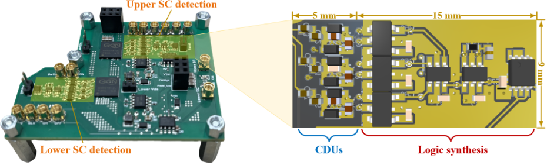

Welcome to
Gate driver, protection, and condition monitoring

Details
- Developing Ultrafast Noise-Immune Short-Circuit Detection and Protection for Wide Bandgap Power Devices
- Designing a TSEP-integrated gate driver for real-time junction temperature monitoring of SiC MOSFETs
- Developing degradation-free TSEPs for long-term temperature monitoring
- Researching high-current, scalable, isolated optical gate drivers for advanced power devices
Publications
D. Qin, Z. Zhang, L. Wang, S. Dam, C.H. Yang, Z. Dong, C. Wan, H. Bai, and F. Wang, “Co-design of detection, actuation, and control for solid-state circuit breakers in electrified aircraft propulsion system,” in IEEE Journal of Emerging and Selected Topics in Power Electronics, early access.
Link, Paper
B. F. Brown, Z. Zhang, J. H. Enslin and C. Wan, “Universal short-circuit and open-circuit fault protection and detection for a power converter’s power device,” in IEEE Transactions on Industry Applications, vol. 61, no. 1, pp. 527-536, Jan.-Feb. 2025.
Link, Paper
D. Qin, Z. Zhang, D. Zhang, Y. Xu, C. wan, R. Lakshmi, S. Tohid, D. Dong, and Y. Cao, “Oscillation issue and solution for solid-state circuit breaker using high power IGBT module,” in IEEE Transactions on Industry Applications, vol. 60, no. 1, pp. 765-772, Jan.-Feb. 2024.
Link, Paper
D. Zhang, Y. Xu, B. Jonathan, Z. Zhang, D. Qin, and D. Dong, “A solid-state circuit breaker without current limiting inductor,” in IEEE Transactions on Industry Applications, vol. 59, no. 4, pp. 4640-4650, July-Aug. 2023.
Link, Paper
A. K. Das, and Z. Zhang, “Light-triggered, ultrafast gate driver empowered by GaN buffer for high power SiC module,” in Proc. IEEE Energy Conversion Congress and Exposition, Oct. 2025.
Link, Paper
T. Qiu, and Z. Zhang, “Ultrafast noise-immune short-circuit detection in gallium nitride power semiconductors via drain-source voltage pattern recognition,” in Proc. IEEE Energy Conversion Congress and Exposition, Oct. 2025.
Link, Paper
A. K. Das, T. Qiu, and Z. Zhang, “Investigating the limitations of Desat protection for WBG semiconductors: conjoint effects due to the parasitic inductances, junction temperature and dynamic drain-source resistance,” in IEEE Microelectronics Design and Test Symposium, May 2025.
Link, Paper
B. F. Brown, J. Westman, J. Enslin and Z. Zhang, “Development of a two-level, four-leg smart inverter for microgrid applications,” IEEE 15th International Symposium on Power Electronics for Distributed Generation Systems (PEDG), Luxembourg, Luxembourg, 2024, pp. 1-6.
Link, Paper
D. Qin, Z. Zhang, S. K. Dam, C. H. Yang, Z. Dong, C. Wan, H. Bai, and F. Wang, “Towards system-friendly solid-state circuit breaker for electrified aircraft propulsion,” IEEE Applied Power Electronics Conference and Exposition (APEC), Long Beach, CA, USA, 2024, pp. 3108-3114.
Link, Paper
Y. Xu, D. Zhang, K. Brandon, R. Lakshmi, D. Qin, and Z. Zhang, “The analysis design and optimization of an electronic MOV circuit for the solid-state circuit breaker applications,” in Proc. IEEE Energy Conversion Congress and Exposition, Oct.-Nov. 2023, pp. 1767-1773.
Link, Paper
A. Moghassemi, C. S. Edrington, G. Ozkan, Z. Zhang, G. Muriithi, “Active thermal control of AC/DC power converter considering health monitoring of power modules,” in Electric Ship Technology Symposium, August 2023, pp. 78-85.
Link, Paper
B. Brown, Z. Zhang, “Universal short-circuit and open-circuit fault detection for an inverter,” in International Conference on Power Electronics – ECCE Asia, May 2023, pp. 3230-3238.
Link, Paper
D. Qin, Z. Zhang, S. K. Dam, C. H. Yang, Z. Dong, R. Chen, H. Bai, and F. Wang, “Intelligent gate drive for cryogenic solid-state circuit breaker with current limitation capability for aviation application,” in Proc. IEEE Applied Power Electronics Conference and Exposition, March 2023, pp. 318-323.
Link, Paper